Launcher
The compact ⌥Space bar and its results — the front door.
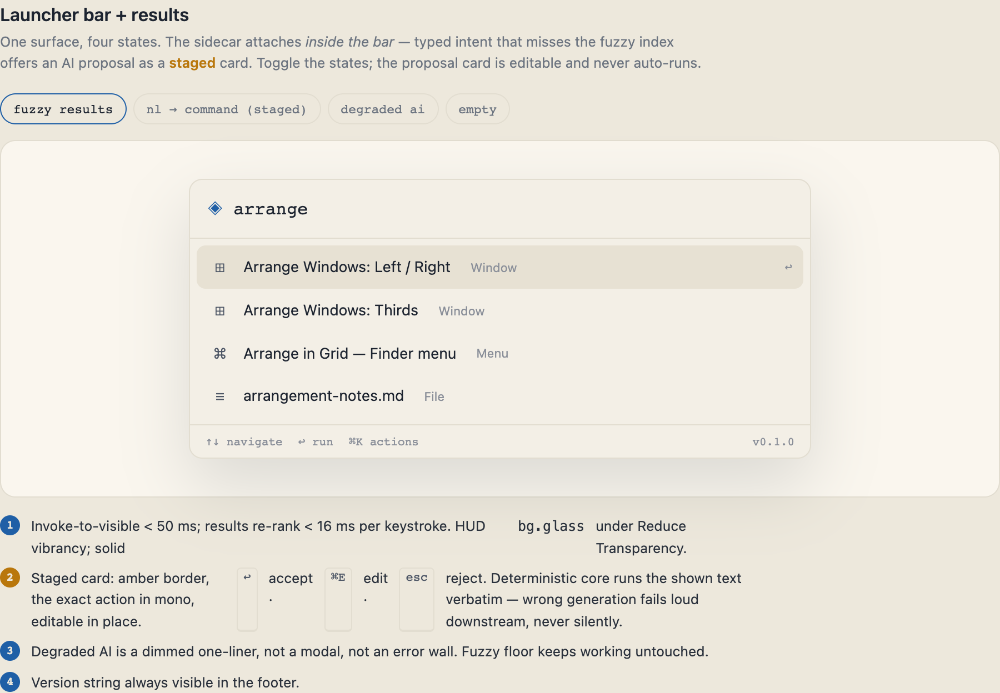
Launcher & results
⌥Space opens the bar — type to fuzzy-match apps, files, calculator, unit conversion, snippets, emoji and more. ↑↓ to navigate, ↩ to run, ⌘K for actions.
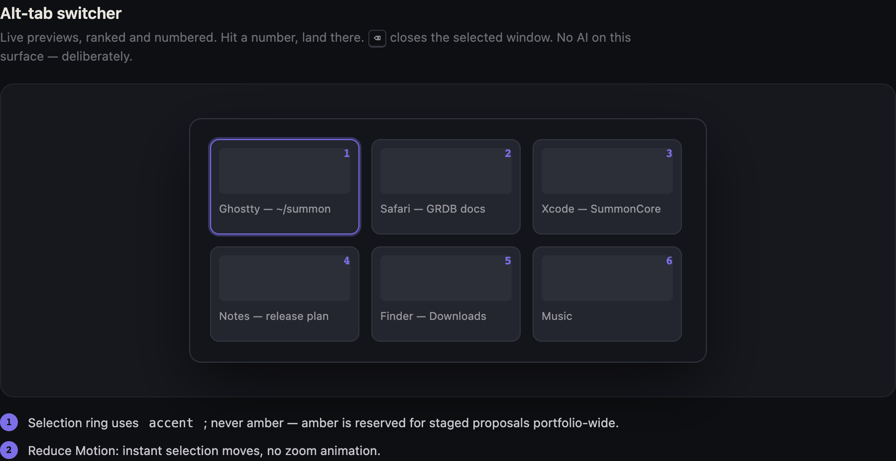
Alt-tab switcher
A launcher-native window switcher — running apps, filtered as you type, focused with a keystroke.
On-device AI
Answers on your Mac; actions staged for one-click Accept, never auto-run. A question can be answered on-device or by searching the web — a keyless Wikipedia floor, or your own SearXNG — and only your query ever leaves.
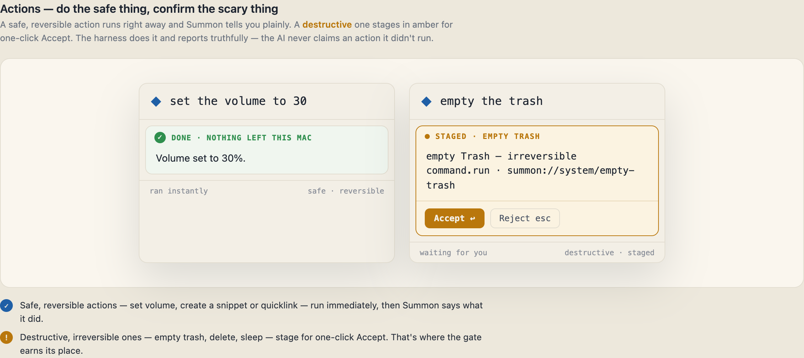
Actions — safe runs, destructive confirms
Ask Summon to do something and it runs the safe, reversible ones instantly ('Volume set to 30%'), while destructive ones (empty trash, delete) stage for one-click Accept. The harness acts and reports truthfully — the AI never claims an action it didn't run.
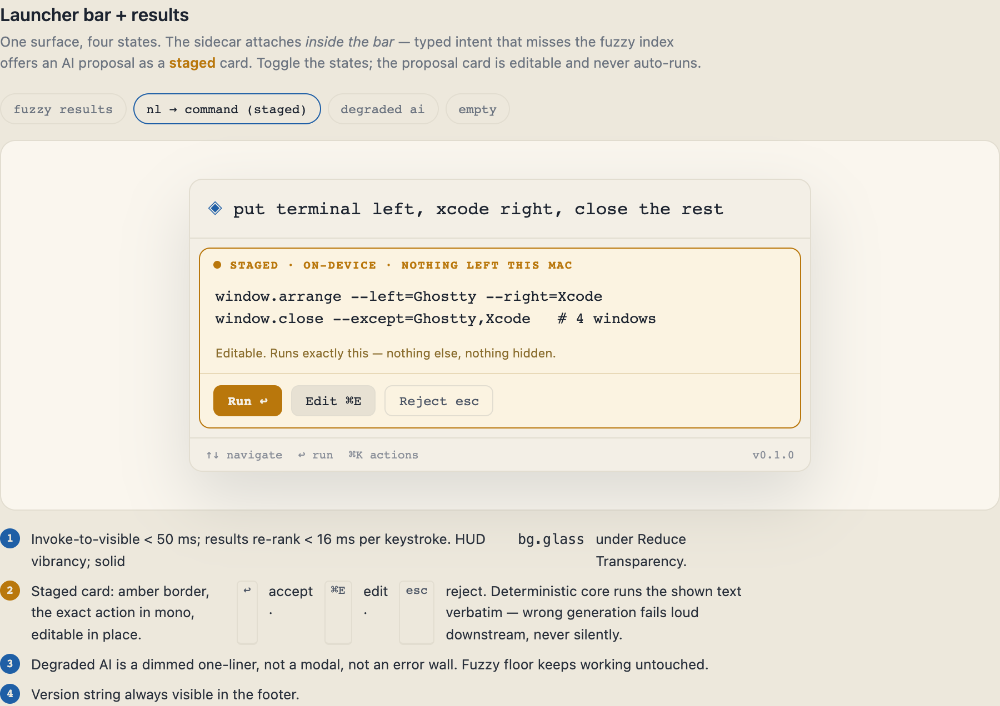
Answer vs. action — staged
Ask the on-device AI to do something ('make a snippet', 'set the volume to 30') and it stages in amber for you to Accept or Reject. Summon never auto-runs an AI action, and never claims it did one it only proposed.
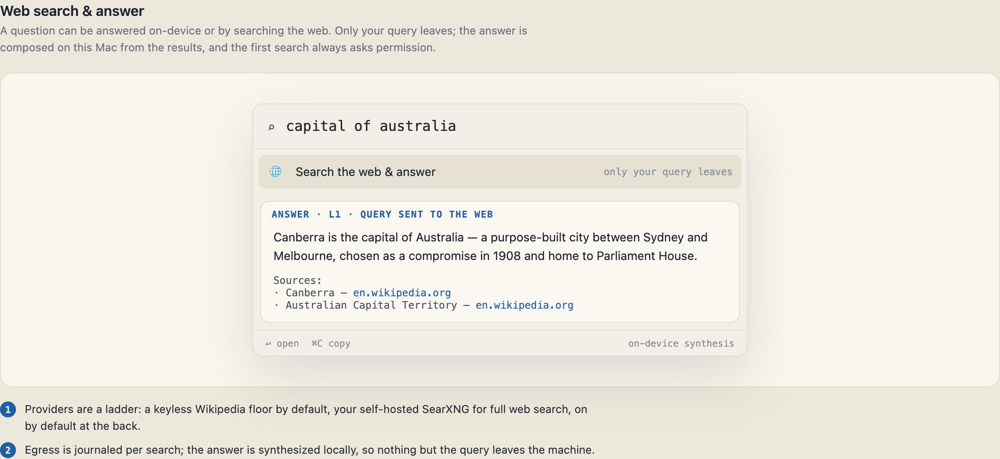
Web search & answer
Ask a question and Summon can search the web — a keyless Wikipedia floor by default, or your own SearXNG — then compose the answer on-device. Only your query leaves, and the first search asks permission.
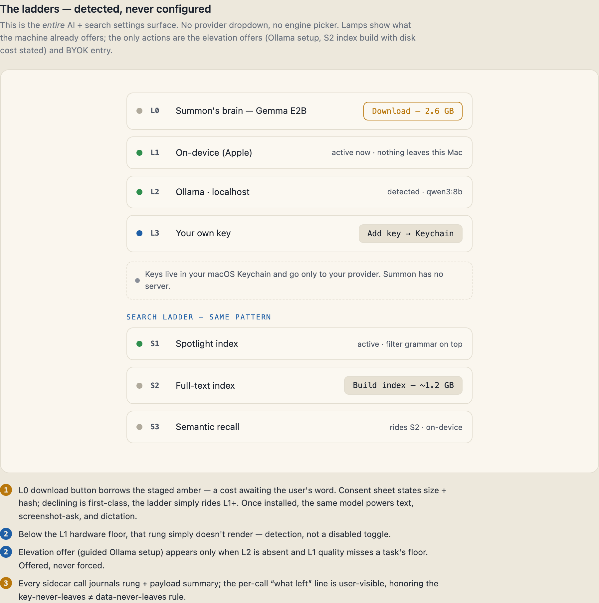
The AI ladder
Summon detects the best available on-device model — Apple Foundation Models first — and states the rung honestly. It is detected, never configured.
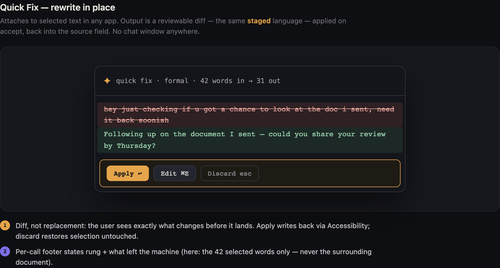
Quick Fix — rewrite in place
Hand selected text to the on-device model; the rewrite is staged for review before it replaces anything.
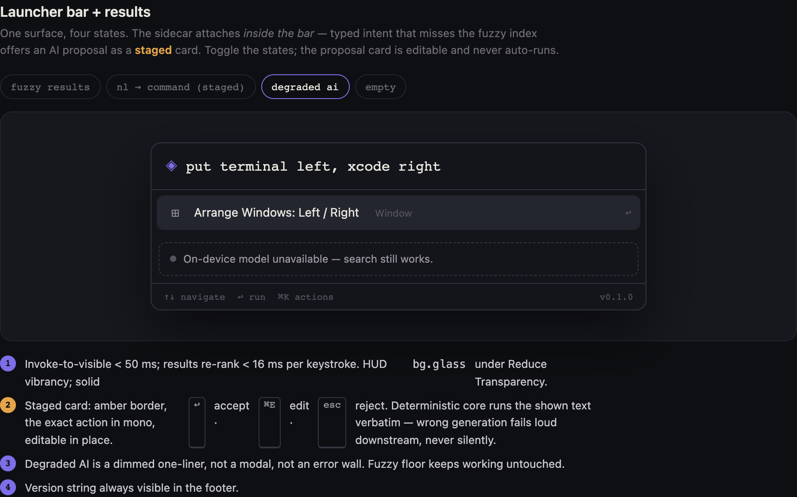
Degraded, still working
With no AI model available, search still works; the strip says so plainly, and AI returns the moment a rung is detected.
Search & preferences
Web search on by default; local-first or web-first for a question, your call.
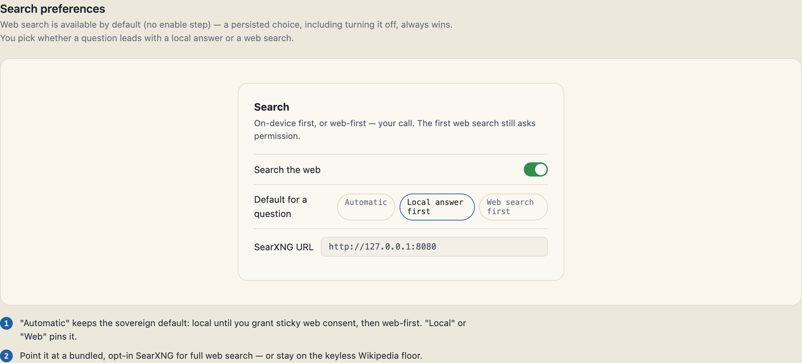
Search preferences
Web search is on by default; you choose whether a question leads with a local answer or a web search. A persisted choice always wins, and the first web search still asks permission.
Clipboard
Local clipboard history, private by default.
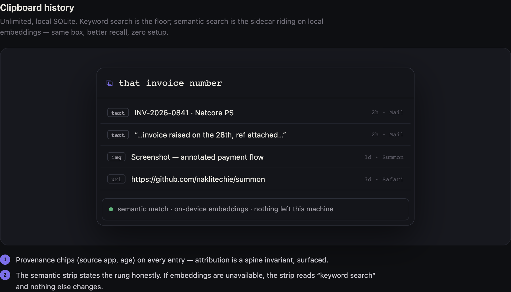
Clipboard history
⌥⇧C opens local clipboard history — text, images, HTML and RTF, all on this Mac, with an ignore list for sensitive apps.
First run & states
What a new user sees, and how Summon stays honest when there is nothing — or something is wrong.
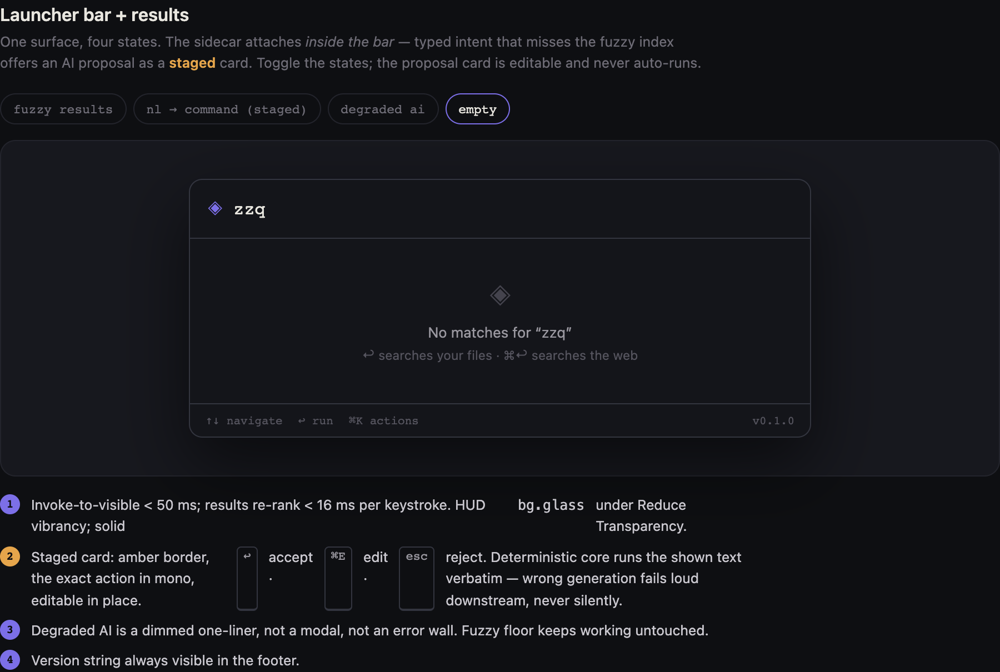
First run — the empty state
A brand-new, zero-data Summon: the bar is ready before you've added anything, so nothing feels broken on day one.
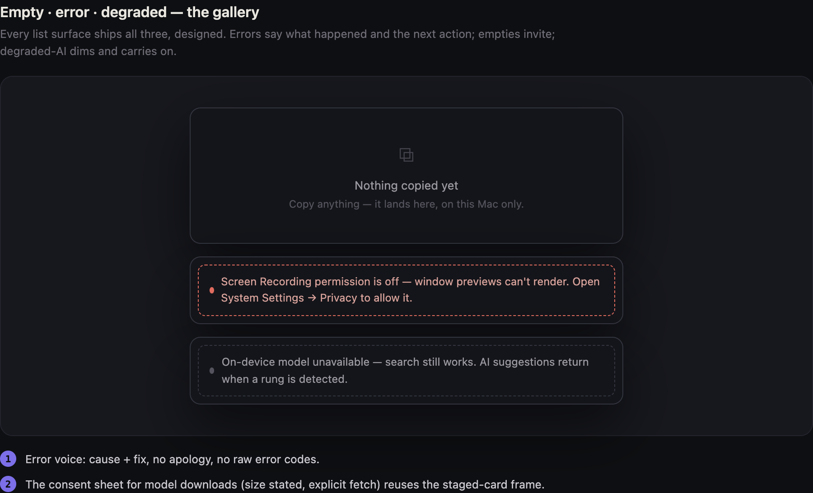
Empty · error · degraded
The honest state gallery — how Summon looks when there is nothing to show, something failed, or the AI is unavailable.
Extend & automate
The agent face, and the (deferred) extension surface.
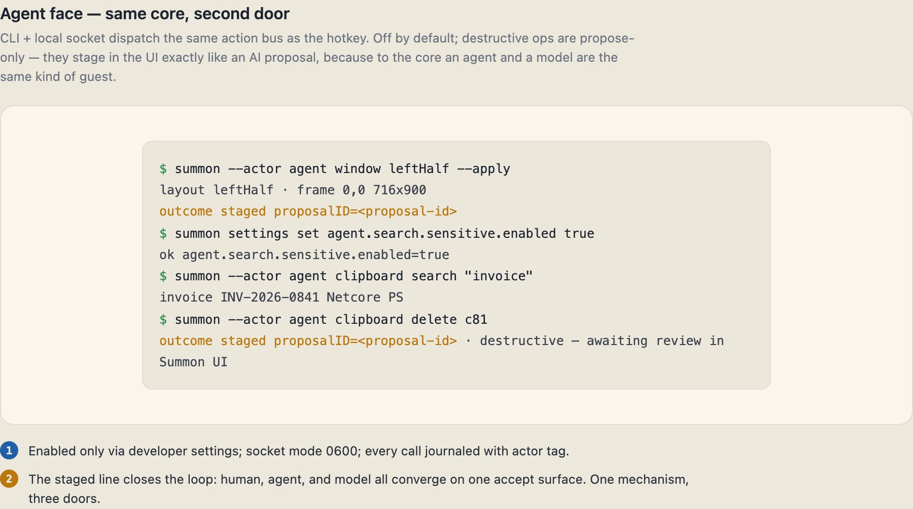
The agent face — CLI + socket
The same core behind a second door: a local CLI and a default-off UNIX socket. Every mutating action is journaled with actor= and staged for review, never auto-applied.
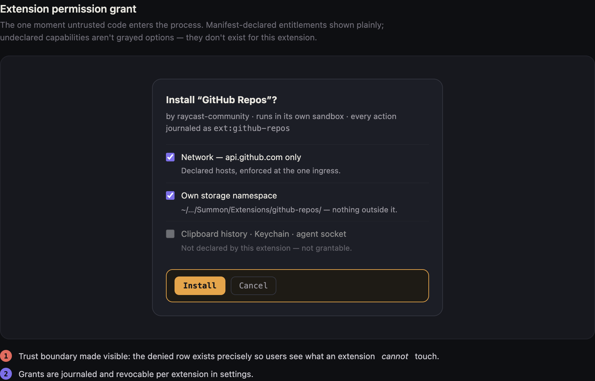
Extension permissions
Every extension capability is an explicit, reviewable grant — no ambient access. (Extensions are a development surface, not shipped in v0.6.)
Design
The tokens the product — and this guide — are built from.
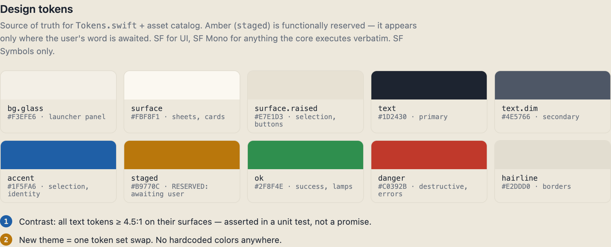
Design language
The dark-glass palette, accent, and type scale the whole app is built from — the same tokens theme this guide.
No matching screens.